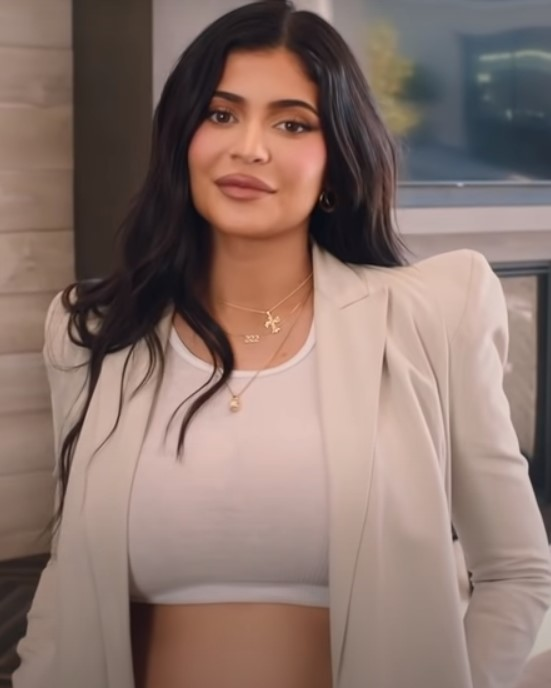
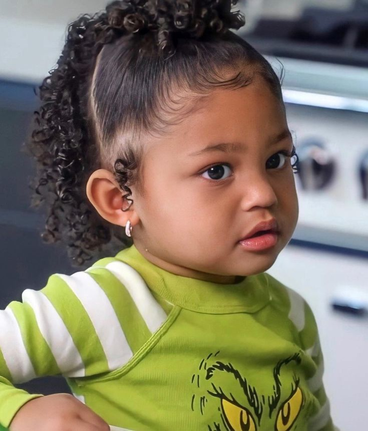

GITPRACTICE
ABOUT TRAVIS SCOTT
MOST POPULAR ALBUMS
Utopia
Astroworld
Rodeo
Birds in the Trap Sing McKnight
JackBoys
BIO
Jacques Bermon Webster II (born April 30, 1991), known professionally as Travis Scott (formerly stylized Travi$ Scott), is an American rapper, singer, songwriter, and record producer. Throughout his career, Scott has achieved four number-one hits on the US Billboard Hot 100 chart, along with 80 total charted songs. Scott has been nominated for eight Grammy Awards and won a Billboard Music Award, Latin Grammy Award, MTV Video Music Award, and multiple BET Hip Hop Awards. As of 2020, Scott has sold over 45 million certified records in the US alone. Scott's musical style has been described as a "blend between traditional hip-hop and lo-fi" and often characterized as "ambient," with a heavily appraised influence from rappers Kanye West and Kid Cudi. His stage name is derived from the latter (whose real name is Scott Mescudi) combined with the name of a favorite uncle.
In 2012, Scott signed his first major-label recording contract with Epic Records, and a publishing deal with Kanye West's GOOD Music as an in-house producer. In April 2013, he entered a joint-venture record deal with American rapper T.I.'s Grand Hustle Records. Scott self-released his first full-length project, a mixtape titled Owl Pharaoh, in 2013, which was followed with a mixtape titled Days Before Rodeo, in 2014. His debut studio album, Rodeo (2015) was released to critical praise and moderate commercial success. The album preceded by the singles "3500" (featuring Future and 2 Chainz) and "Antidote"; the latter of which became his first hit song, peaking at number 16 on the Billboard Hot 100. His second album, Birds in the Trap Sing McKnight (2016), became his first number-one album on the Billboard 200 chart. The following year, Scott released a collaborative album with rapper Quavo, titled Huncho Jack, Jack Huncho, under the group name Huncho Jack.
In 2018, his third album, Astroworld, was released to critical acclaim and also reached the top spot of the Billboard 200. Additionally, the album produced his first Billboard Hot 100 number-one single, "Sicko Mode" (featuring Drake).[10] In late 2019, Scott's vanity label imprint, Cactus Jack Records, released the compilation album JackBoys, which also topped the Billboard 200. After the release of his single "Franchise" (featuring Young Thug and M.I.A.) in 2020, Scott became the first artist on the Hot 100 to have three songs debut at number one in less than a year.[11] Five years after the release of his third album, Scott released his highly anticipated follow-up Utopia, becoming his fourth consecutive number-one album on the Billboard 200.
Over the course of his career, Scott has become a globally recognized artist and pop culture figure. Along with his highly publicized relationship with American media personality Kylie Jenner, Scott has collaborated with organizations including Nike, Dior, and McDonald's. In 2017, he founded the record label Cactus Jack Records. Scott has also gained notoriety for controversies and legal issues regarding safety at his concerts. In November 2021, a mass-casualty crowd crush occurred during Scott's performance at the Astroworld Festival in his hometown of Houston, Texas, resulting in some condemnation of the artist.
TRAVIS FAMILY:
Wife -
Kylie Jenner

Kylie Kristen Jenner (born August 10, 1997)[7] is an American socialite, media personality, and businesswoman. She starred in the E! reality television series Keeping Up with the Kardashians from 2007 to 2021 and then the Hulu reality television series The Kardashians from 2022. She is the founder and owner of cosmetic company Kylie Cosmetics. She is the fifth-most-followed person on Instagram.
At age 14 in 2012, Jenner collaborated with the clothing brand PacSun, along with her sister Kendall, and created a line of clothing, Kendall & Kylie. In 2015, she launched her own cosmetics line called Kylie Lip Kits, which was renamed to Kylie Cosmetics the following year.[8]
Jenner has been an influential figure in culture since the mid 2010s. In 2014 and 2015, Time magazine listed the Jenner sisters on their list of the most influential teens in the world, citing their considerable influence among youth on social media.[9][10] In 2017, Jenner was placed on the Forbes Celebrity 100 list, making her the youngest person to be featured on the list. Jenner starred on her own spin-off series, Life of Kylie, which premiered in 2017.[12]
Jenner's wealth and its coverage on the magazine Forbes has been a source of controversy in the past. In 2019, the magazine estimated Jenner's net worth at US$1 billion and called her the world's youngest self-made billionaire at age 21;[13][14] the notion of Jenner being self-made has been controversial. In May 2020, Forbes released a statement accusing Jenner of forging tax documents so she would appear as a billionaire.
Daughter -
Stormi Webster

Stormi Webster, born on February 1, 2018, in Los Angeles, California, is the daughter of make-up mogul Kylie Jenner, and American rapper Travis Scott. Only four years old, this little superstar has already garnered more fame for just being herself, than most of us will in a lifetime. Constantly featuring on her mom’s Instagram dressed to the nines, Webster is always in full swag with outfits that put the rest of us to shame. The fashion icon has already set Twitter aflame several times and made headlines over the years with the internet falling in love with her personality.